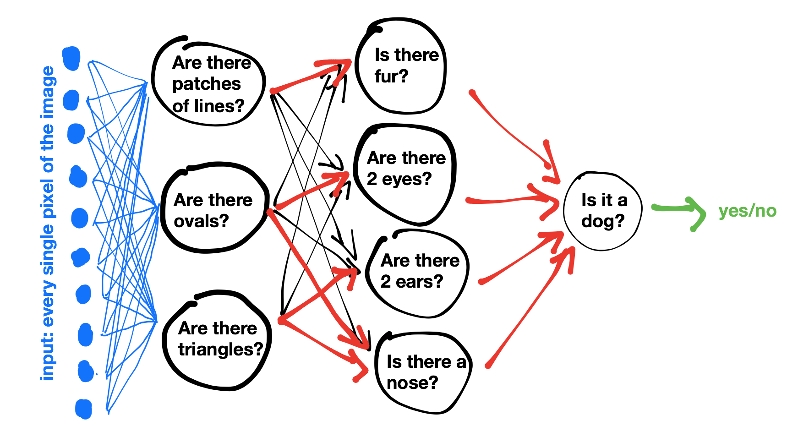

Kunstig intelligens (KI) utvikler seg i en rekordfart, og spiller en stadig større
rolle i alt fra skole og helsevesen til underholdning og arbeidslivet. Men midt i all denne utviklingen
vokser også bekymringene. Hvor bærekraftig er egentlig KI?
I denne fagartikkelen ser jeg nærmere på hvordan kunstig intelligens, med spesielt fokus på
språkmodellen «Generative Pre-trained Transformer» (GPT), kan kalles bærekraftig.
Først forklarer jeg hvordan GPT-teknologi fungerer, for å danne et grunnlag, slik at det blir lettere å
forstå hvordan slike systemer er bygget opp og brukes. Etter dette vurderer jeg hvilke konsekvenser
GPT-teknologien har for bærekraft. Både når det gjelder klimaavtrykk, energibruk og sosiale og
økonomiske forhold. Til slutt diskuterer jeg mulige løsninger som kan bidra til å gjøre teknologien mer
bærekraftig, og ser på eksempler fra virkeligheten som viser hvordan KI både kan være en utfordring og
en del av løsningen.
Hvordan fungerer en Ki modell?
En Ki-modell har mye data fra bøker, tekster ting fra internettet som den har blitt “matet” med. For
eksempel, hvis den skal klare å finne ut av hva som er en katt og ikke så har den fått tusenvis av
bilder med katter og av bilder som ikke er katter. Kunstlig intelegens er veldig god på å finne
mønstere som at katter har ofte spisse ører og er som oftest inne i et hus.
På samme måte virker en «Generative Pre-trained Transformer (GPT)». En GPT ser på hva den tiligere
har blitt «matet» også ser den på hvordan andre brukere skriver for å forstå hva jeg skal spørre om
Hva er nøvrale nettverk?
Et nevralnettverk er litt som hjernen vår. En KI-datamaskin har noder som kan sammenlignes med
hjerneceller. Den har vekter, som er en type matematisk forbindelse som kan sammenlignes med
synapsene i hjernen. Og når vi lærer noe, lærer vi fra erfaring, mens en KI lærer via data og
trening. Så det er noe likt, men hvordan virker dette?
Dette virker på den måten at den har tre lag: et input-lag, et skjult lag og et output-lag. Disse
tre lagene er essensielle for at den skal kunne virke. Det første laget tar inn dataene, slik som
bilder, tekst og tall. Det skjulte laget bearbeider og lærer mønstrene og kjennetegnene i dataen. Og
output-laget gir svaret tilbake til oss.
Hver synapse mellom nodene har vekt (et tall som styrer hvor viktig informasjonen er). Dette
nettverket av noder justerer vektene etter hvert for å gjøre modellen bedre. For eksempel, hvis du
gir dette nettverket flere tusen bilder av katter og hunder, vil det lære seg mønstre som ører,
pels, form osv. Når den er ferdig trent, vil den si i output-laget at dette bildet ser ut som en
katt. Dette har den klart å finne ut fordi synapsen sier at det er 95 % sannsynlighet.
Men disse synapsene eller vektene har en annen likhet med hjernen vår. Den er nemlig like lat. Hver
gang man går gjennom disse tre lagene, prøver den å finne ut hvilke noder den skal gjennom for å
komme kjappest frem til svaret. På akkurat samme måte som hjernen vår.
Jo flere noder og vekter (synapser) den har, jo mer må den kjøre gjennom hver gang. Hvis modellen
har 1 million vekter, må modellen gjøre 1 million utregninger (også kjent som operasjoner) hver
gang. Dette produserer mye varme, siden det blir kjørt så mange på en gang. Varmen gjør at serverne
blir overopphetet og dermed slutter å virke. Derfor må det kjøres vann gjennom rør som er koblet til
hver server for å avkjøle dem.

Chatgpt
Et eksempel på KI, spesielt LLM (large language model) er for eksempel: openAI sin chatbot ChatGPT. ChatGPT har en modell kalt GPT-4o. denne modellen har 200 milliarder vekter eller parametere. (allm.link, 2025)
Er dette bærekraftig?
Disse store serverne som kjører KI-modellene og som gir brukeren svar tilbake, kjører på veldig mye vann og strøm. Faktisk bruker det opptil tre ganger så mye vann som et vanlig Google-søk. Og den siste tiden har dette blitt en større og en mer diskutert problemstilling, men hva har det å si for økonomien, samfunnet og ikke minst miljøet?
De tre pilarene i bærekraft
Miljømessig bærekraft
De gode tingene
De dårlige tingene
Økonomisk bærekraft
De gode tingene
De dårlige tingene
Sosial bærekraft
De gode tingene
De dårlige tingene
Alternativer til KI-bruk
Et alternativ til for eksempel ChatGPT er å laste ned en liten modell (etter hvor stor kapasitet PC-en din har) og kjøre denne modellen lokalt på PC-en. Dette forhindrer bruk av vann og reduserer strømforbruket kraftig. Det er ganske begrenset hvor mye en PC klarer å bruke i forhold til servere som er like store som store familiehus. Et problem er at man ikke kan få bilder når man gjør dette lokalt, men det er kanskje noe som kommer innen ett til to år maks!
Så… er KI bærekraftig?
Det kommer helt an på hvordan vi bruker det. KI kan både være en klimaversting og en problemløser. Hvis vi bruker teknologien smart, for eksempel til å spare energi, forbedre helsetjenester eller analysere klimadata, kan den faktisk bidra til bærekraft. Men om vi lar den vokse ukontrollert uten å tenke på miljø, økonomi og rettferdighet, kan konsekvensene bli alvorlige. KI er ikke bærekraftig i seg selv, og det er opp til oss å gjøre den til en del av løsningen i stedet for problemet.